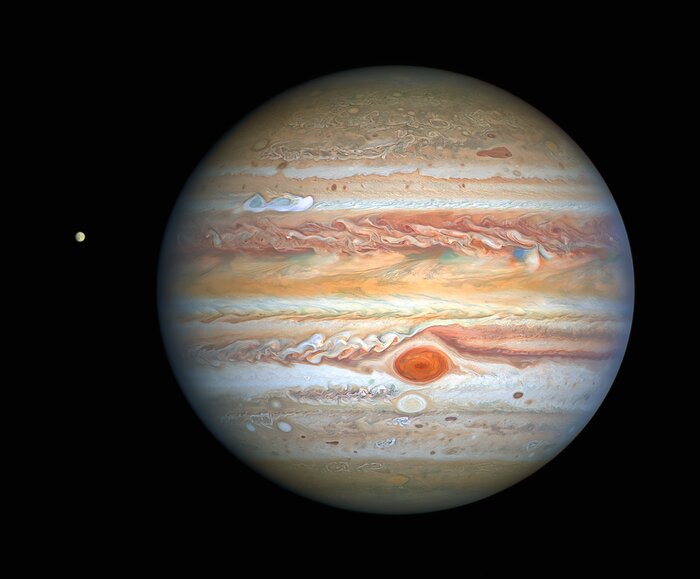
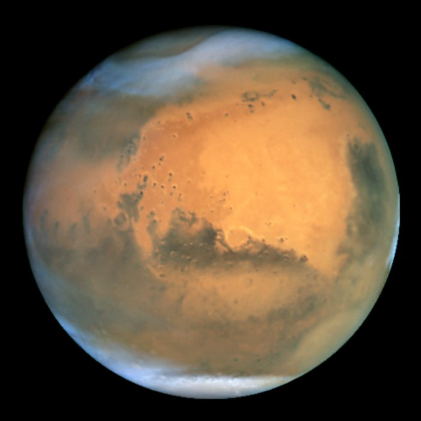
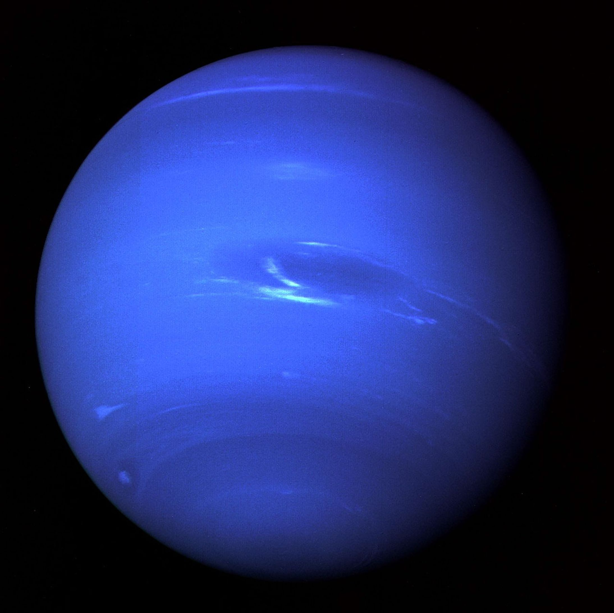
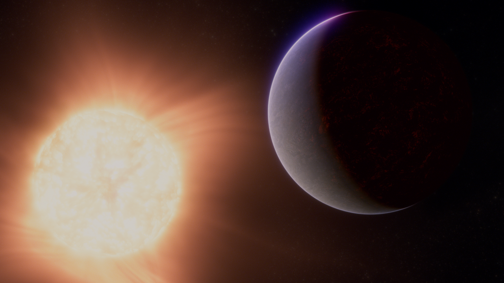
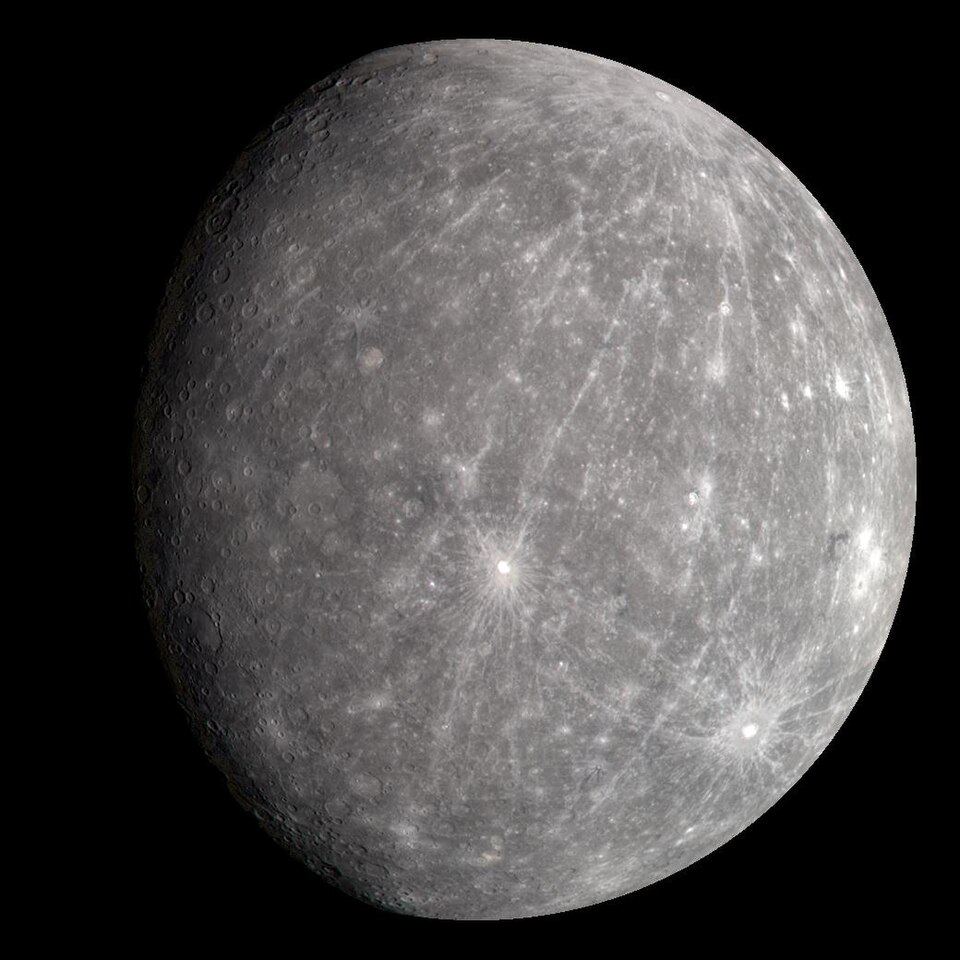
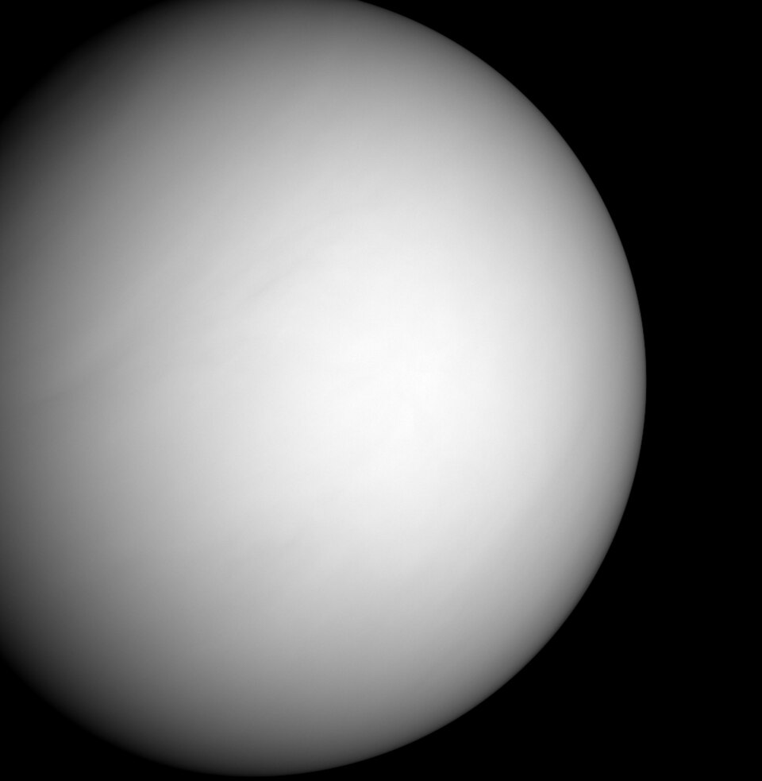
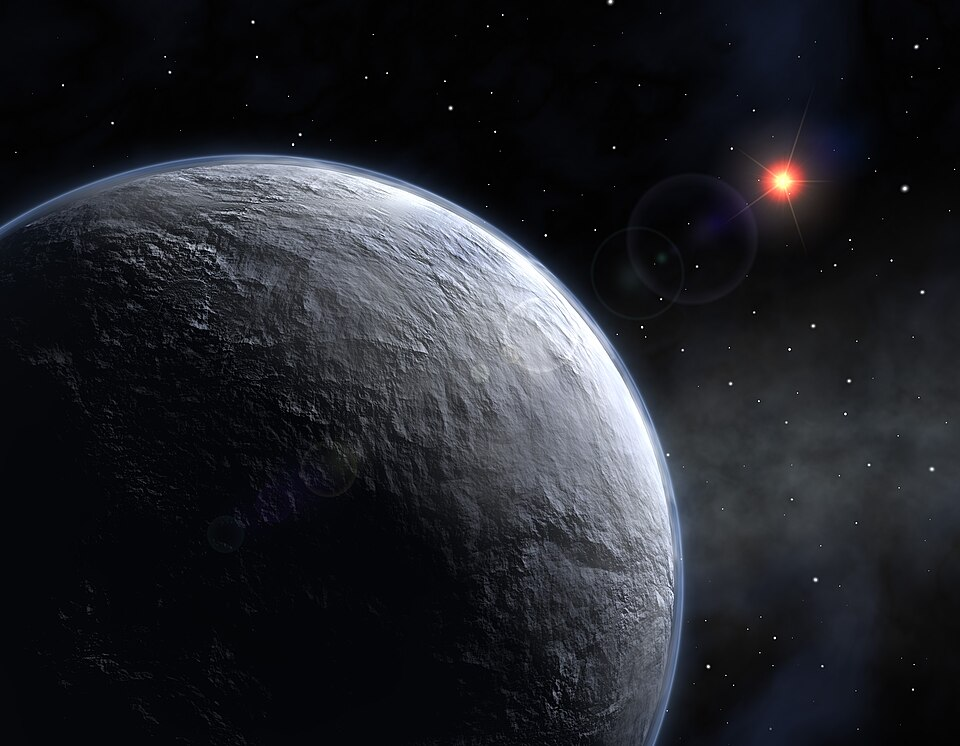

1. Jupiter

Jupiter is the fifth planet from the Sun, and the largest in the Solar System. It is a gas giant with a mass nearly 2.5 times that of all the other planets in the Solar System combined and slightly less than one-thousandth the mass of the Sun. The diameter of Jupiter is 11 times that of Earth and a tenth that of the Sun. It orbits the Sun at a distance of 5.20 AU (778.5 Gm), with an orbital period of 11.86 years. Jupiter is the third-brightest natural object in the Earth's night sky, after the Moon and Venus, and has been observed since prehistoric times. Its name derives from that of Jupiter, the chief deity of ancient Roman religion.
At least 115 moons orbit the planet; the four largest moons—Io, Europa, Ganymede, and Callisto—orbit within the magnetosphere and are visible with common binoculars. Ganymede, the largest of the four, is larger than the planet Mercury. Jupiter is surrounded by a faint system of planetary rings. The rings of Jupiter consist mainly of dust and have three main segments: an inner torus of particles known as the halo, a relatively bright main ring, and an outer gossamer ring.
Physical Characteristics
Jupiter is a gas giant, meaning its chemical composition is primarily hydrogen and helium. These materials are classified as gasses in planetary geology, a term that does not denote the state of matter. It is the largest planet in the Solar System, with a diameter of 142,976 km (88,841 mi) at its equator, giving it a volume 1,321 times that of the Earth. Its average density, 1.326 g/cm3, is lower than those of the four terrestrial planets.
Moons
Jupiter has 115 known natural satellites,[8] and it is likely that this number will go up due to increasing telescopic observations. Of these, only 16 are larger than 10 km in diameter. The four largest moons, known as the Galilean moons, are Ganymede, Callisto, Io, and Europa (in order of decreasing size), and are visible from Earth with binoculars on a clear nigh
2. Saturn

Saturn is the sixth planet from the Sun and the second largest in the Solar System, after Jupiter. It is a gas giant, with an average radius of about 9 times that of Earth. It has an eighth of the average density of Earth, but is over 95 times more massive. Even though Saturn is almost as big as Jupiter, Saturn has less than a third of its mass. Saturn orbits the Sun at a distance of 9.59 AU (1,434 million km), with an orbital period of 29.45 years.
The planet has a bright and extensive system of rings, composed mainly of ice particles, with a smaller amount of rocky debris and dust. At least 293 moons orbit the planet, of which 63 are officially named; these do not include the hundreds of moonlets in the rings. Titan, Saturn's largest moon and the second largest in the Solar System, is larger (but less massive) than the planet Mercury and is the only moon in the Solar System that has a substantial atmosphere
Physical Characteristics
Saturn is a gas giant, composed predominantly of hydrogen and helium, and lacks a definite surface. Saturn has a "diffuse core", extending 60% of the way to the planet's surface, composed of an indeterminate gradient of rock and ice toward the center. Saturn is the only planet of the Solar System that is less dense than water—about 30% less. The average specific density of the planet is 0.69 g/cm3 due to its atmosphere. Jupiter's mass is 318 times Earth's, while Saturn is only 95 times Earth's. Together, Jupiter and Saturn hold 92% of the total planetary mass in the Solar System
Moons
Saturn has 293 known moons, 63 of which have formal names.[11] There is evidence of dozens to hundreds of moonlets with diameters of 40–500 meters in Saturn's rings,[103] which are not considered to be true moons. Titan, the largest moon, comprises more than 90% of the mass in orbit around Saturn, including the rings.[104] Saturn's second-largest moon, Rhea, may have a tenuous ring system of its own,[105] along with a tenuous atmosphere.[106][107][108] Many of the other moons are small: 143 are less than 50 km in diameter.[109] Traditionally, most of Saturn's moons have been named after Titans of Greek mythology. Titan is the only satellite in the Solar System with a major atmosphere,[110][111] in which a complex organic chemistry occurs. It is the only satellite with hydrocarbon lakes.[112][113]
3. Mars

Mars is the fourth planet from the Sun. It is also known as the "Red Planet",[23] for its orange-red appearance.[24][25] Mars is a desert-like rocky planet with a tenuous atmosphere that is primarily carbon dioxide (CO2). At the average surface level the atmospheric pressure is a few thousandths of Earth's, atmospheric temperature ranges from −153 to 20 °C (−243 to 68 °F),[26] and cosmic radiation is high. Mars retains some water, in the ground as well as thinly in the atmosphere, forming cirrus clouds, fog, frost, larger polar regions of permafrost and ice caps (with seasonal CO2 snow), but no bodies of liquid surface water. Its surface gravity is roughly a third of Earth's or double that of the Moon. Its mean diameter, 6,779 km (4,212 mi),[27] is about half the Earth's, or twice the Moon's, and its surface area is the size of all the dry land of Earth.[28]
Physical Characteristics
Mars is approximately half the diameter of Earth or twice that of the Moon, with a surface area only slightly less than the total area of Earth's dry land.[2] Mars is less dense than Earth, having about 15% of Earth's volume and 11% of Earth's mass, resulting in about 38% of Earth's surface gravity. Mars is the only presently known example of a desert planet, a rocky planet with a surface akin to that of Earth's deserts. The red-orange appearance of the Martian surface is caused by iron(III) oxide (nanophase Fe2O3) and the iron(III) oxide-hydroxide mineral goethite.[46] It can look like butterscotch;[47] other common surface colors include golden, brown, tan, and greenish, depending on the minerals present.
Moons
Mars has two relatively small (compared to Earth's) natural moons, Phobos (about 22 km (14 mi) in diameter) and Deimos (about 12 km (7.5 mi) in diameter), which orbit at 9,376 km (5,826 mi) and 23,460 km (14,580 mi) around the planet. The origin of both moons is unclear, although a popular theory states that they were asteroids captured into Martian or
4. Neptune

Neptune is the eighth and farthest known planet orbiting the Sun. It is the fourth-largest planet in the Solar System by diameter, the third-most-massive planet, and the densest giant planet. It is 17 times the mass of Earth. Compared to Uranus, its neighbouring ice giant, Neptune is slightly smaller, but more massive and dense. Being composed primarily of gases and liquids,[23] it has no well-defined solid surface. Neptune orbits the Sun once every 164.8 years at an orbital distance of 30.1 astronomical units (4.5 billion kilometres; 2.8 billion miles). It is named after the Roman god of the sea and has the astronomical symbol ♆, representing Neptune's trident.[e] Neptune is not visible to the unaided eye and is the only planet in the Solar System that was not initially observed by direct empirical observation. Rather, unexpected changes in the orbit of Uranus led Alexis Bouvard to hypothesise that its orbit was subject to gravitational perturbation by an unknown planet. After Bouvard's death, the position of Neptune was mathematically predicted from his observations, independently, by John Couch Adams and Urbain Le Verrier. Neptune was subsequently directly observed with a telescope on 23 September 1846[2] by Johann Gottfried Galle within a degree of the position predicted by Le Verrier. Its largest moon, Triton, was discovered shortly thereafter, though none of the planet's remaining moons were located telescopically until the 20th century.
Physical Characteristics
Neptune's mass of 1.024×1026 kg[8] is intermediate between Earth and the larger gas giants: it is 17.15 times that of Earth but just 1/19th that of Jupiter.[g] Its gravity at 1 bar is 11.27 m/s2, 1.15 times the surface gravity of Earth,[8] and surpassed only by Jupiter.[79] Neptune's equatorial radius of 24,764 km[11] is nearly four times that of Earth. Neptune, like Uranus, is an ice giant, a subclass of giant planet, because they are smaller and have higher concentrations of volatiles than Jupiter and Saturn.[73] In the search for exoplanets, Neptune has been used as a metonym: discovered bodies of similar mass are often referred to as "Neptunes",[80] just as scientists refer to various extrasolar bodies as "Jupiters
Moons
Neptune has 16 known moons.[169] Triton is the largest Neptunian moon, accounting for more than 99.5% of the mass in orbit around Neptune,[j] and is the only one massive enough to be spheroidal. Triton was discovered by William Lassell just 17 days after the discovery of Neptune itself. Unlike all other large planetary moons in the Solar System, Triton has a retrograde orbit, indicating that it was captured rather than forming in place; it was probably once a dwarf planet in the Kuiper belt.
5. 55 Cancrie Ae

55 Cancri Ae (abbreviated 55 Cnc Ae), officially named Janssen (/ˈdʒænsən/), is an exoplanet orbiting a Sun-like host star, 55 Cancri A. The mass of the exoplanet is about eight Earth masses and its diameter is about twice that of the Earth.[9] 55 Cancri Ae was discovered in data taken during 2003–2004 and announced in 2004, thus making it the first super-Earth discovered around a main sequence star, predating Gliese 876 d by a year. It is the innermost planet in its planetary system, taking less than 18 hours to complete an orbit. However, until the 2010 observations and recalculations, this planet had been thought to take about 2.8 days to orbit the star.[10] Due to its proximity to its star, 55 Cancri Ae is extremely hot, with temperatures on the day side exceeding 3,000 Kelvin.[7] The planet's thermal emission is observed to be variable, possibly as a result of volcanic activity.[11] It has been proposed that 55 Cancri Ae could be a carbon planet.
Physical Characteristics
55 Cancri Ae receives more radiation than Gliese 436 b, discovered in the same year.[24] The side of the planet facing its star has temperatures more than 2,000 Kelvin (approximately 1,700 degrees Celsius or 3,100 Fahrenheit), hot enough to melt iron.[25] Infrared mapping with the Spitzer Space Telescope indicated an average day-side temperature of 2,700 K (2,430 °C; 4,400 °F) and an average night-side temperature of around 1,380 K (1,110 °C; 2,020 °F).[26] Reanalysis of the Spitzer data in 2022 found a hotter day-side temperature of 3,770 K (3,500 °C; 6,330 °F) and set an upper limit of 1,650 K (1,380 °C; 2,510 °F) on the night-side temperature
Moons
No moons have been found around 55 Cancrie Ae
6. Mercury

Mercury is the first planet from the Sun and the smallest in the Solar System. It is a rocky planet with a trace atmosphere and a surface gravity slightly higher than that of Mars. The surface of Mercury is similar to Earth's Moon, being cratered, with an expansive rupes system generated from thrust faults, and bright ray systems, formed by ejecta. Its largest crater, Caloris Planitia, has a diameter of 1,550 km (960 mi), which is about one-third the diameter of the planet (4,880 km or 3,030 mi). Being the most inferior orbiting planet, it always appears close to the Sun in Earth's sky, as either a "morning star" or an "evening star". It is the planet with the highest delta-v required for travel from Earth, as well as to and from the other planets in the Solar System.
Mercury is a classical planet that has been observed and recognized throughout history as a planet (or wandering star). In English, it is named after the ancient Roman god Mercurius (Mercury), god of commerce and communication, and the messenger of the gods. The first successful flyby of Mercury was conducted by Mariner 10 in 1974, and it has since been visited and explored by the MESSENGER and BepiColombo orbiters.
Physical Characteristics
Mercury is one of four terrestrial planets in the Solar System, which means it is a rocky body like Earth. It is the smallest planet in the Solar System, with an equatorial radius of 2,439.7 kilometres (1,516.0 mi).[4] Mercury is also smaller—albeit more massive—than the largest natural satellites in the Solar System, Ganymede and Titan. Mercury consists of approximately 70% metallic and 30% silicate material
Moons
Mercury Don't have any Moons.
7. Uranus

Uranus is the seventh planet from the Sun. It is a gaseous cyan-coloured ice giant. Most of the planet is made of water, ammonia, and methane in a supercritical phase of matter, which astronomy calls "ice" or volatiles. The planet's atmosphere has a complex layered cloud structure and has the lowest minimum temperature (49 K (−224 °C; −371 °F)) of all the Solar System's planets. It has a marked axial tilt of 82.23° with a retrograde rotation period of 17 hours and 14 minutes. This means that in an 84-Earth-year orbital period around the Sun, its poles get around 42 years of continuous sunlight, followed by 42 years of continuous darkness. Uranus has the third-largest diameter and fourth-largest mass among the Solar System's planets. Based on current models, inside its volatile mantle layer is a rocky core, and a thick hydrogen and helium atmosphere surrounds it. Trace amounts of hydrocarbons (thought to be produced via hydrolysis) and carbon monoxide along with carbon dioxide (thought to have originated from comets) have been detected in the upper atmosphere. There are many unexplained climate phenomena in Uranus's atmosphere, such as its peak wind speed of 900 km/h (560 mph),[25] variations in its polar cap, and its erratic cloud formation. The planet also has very low internal heat compared to other giant planets, the cause of which remains unclear.
Physical Characteristics
Uranus's mass is roughly 14.5 times that of Earth, making it the least massive of the giant planets. Its diameter is slightly larger than Neptune's at roughly four times that of Earth. A resulting density of 1.27 g/cm3 makes Uranus the second least dense planet, after Saturn.[11][85] This value indicates that it is made primarily of various ices, such as water, ammonia, and methane.[19] The total mass of ice in Uranus's interior is not precisely known, because different figures emerge depending on the model chosen; it must be between 9.3 and 13.5 Earth masses.[19][86] Hydrogen and helium constitute only a small part of the total, with between 0.5 and 1.5 Earth masses.[19] The remainder of the non-ice mass (0.5 to 3.7 Earth masses) is accounted for by rocky material.
Moons
Uranus has 29 known natural satellites.[152][153] The names of these satellites are chosen from characters in the works of William Shakespeare and Alexander Pope.[87][154] The five main satellites are Miranda, Ariel, Umbriel, Titania, and Oberon.[87] The Uranian satellite system is the least massive among those of the giant planets; the combined mass of the five major satellites would be less than half that of Triton (largest moon of Neptune) alone.[85] The largest of Uranus's satellites, Titania, has a radius of only 788.9 km (490.2 mi), or less than half that of the Moon, but slightly more than Rhea, the second-largest satellite of Saturn, making Titania the eighth-largest moon in the Solar System. Uranus's satellites have relatively low albedos; ranging from 0.20 for Umbriel to 0.35 for Ariel (in green light).[118] They are ice–rock conglomerates composed of roughly 50% ice and 50% rock. The ice may include ammonia and carbon dioxide.
8. Venus

Venus is the second planet from the Sun. Similar in size and mass to Earth, Venus has no liquid water, and its atmosphere is far thicker and denser than that of any other rocky body in the Solar System. The atmosphere is composed mostly of carbon dioxide and has a thick cloud layer of sulfuric acid that spans the whole planet. At the mean surface level, the atmosphere reaches a temperature of 737 K (464 °C; 867 °F), making it the hottest planet in the solar system and also a pressure 92 times greater than Earth's at sea level, turning the lowest layer of the atmosphere into a supercritical fluid. From Earth, Venus is visible as a star-like point of light, appearing brighter than any other natural point of light in the sky,[23][24] as either the brightest "morning star" or "evening star".
Physical Characteristics
Venus is one of the four terrestrial planets in the Solar System, meaning that it is a rocky body like Earth. It is similar to Earth in size and mass and is often described as Earth's "sister" or "twin".[32] Venus is very close to spherical due to its slow rotation.[33] It has a diameter of 12,103.6 km (7,520.8 mi)—only 638.4 km (396.7 mi) less than Earth's—and its mass is 81.5% of Earth's, making it the third-smallest planet in the Solar System. Conditions on the surface of Venus differ radically from those on Earth because its dense atmosphere is 96.5% carbon dioxide, causing an intense greenhouse effect, with most of the remaining 3.5% being nitrogen.[34][35] The surface pressure is 9.3 megapascals (93 bars), and the average surface temperature is 737 K (464 °C; 867 °F), above the critical points of both major constituents and making the surface atmosphere a supercritical fluid of mainly supercritical carbon dioxide and some supercritical nitrogen.
Moons
No moons have been observed around Venus.
9. OGLE-2005-BLG-390Lb

OGLE-2005-BLG-390Lb (known sometimes as Hoth by NASA[1]) is a super-Earth ice exoplanet orbiting OGLE-2005-BLG-390L, a star 21,500 ± 3,300 light-years (6,600 ± 1,000 parsecs) from Earth near the center of the Milky Way, making it one of the most distant planets known. On January 25, 2006, Probing Lensing Anomalies NETwork/Robotic Telescope Network (PLANET/Robonet), Optical Gravitational Lensing Experiment (OGLE), and Microlensing Observations in Astrophysics (MOA) made a joint announcement of the discovery. The planet does not appear to meet conditions presumed necessary to support life
Physical Characteristics
The planet is estimated to be about five times Earth's mass (5.5+5.5 2.7 M🜨). Some astronomers have speculated that it may have a rocky core like Earth, with a thin atmosphere. Its distance from the star, and the star's relatively low temperature, means that the planet's likely surface temperature is around 50 K (−220 °C; −370 °F), making it one of the coldest known. If it is a rocky world, this temperature would make it likely that the surface would be made of frozen volatiles, substances which would be liquids or gases on Earth: water, ammonia, methane and nitrogen would all be frozen solid.[3] If it is not a rocky planet, it would more closely resemble an icy gas planet like Uranus, although much smaller.
Moons
No moons observed around OGLE-2005-BLG-390Lb.